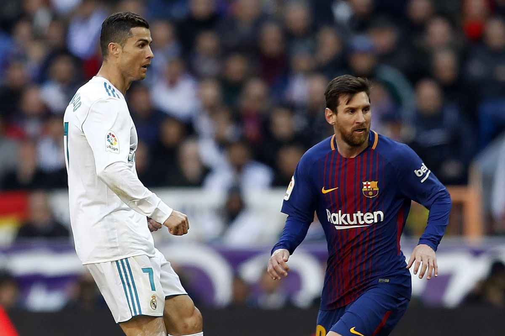

The chorus contains the three official languages used by UEFA: English, German, and French. The climactic moment is set to the exclamations ‘Die Meister! Die Besten! Les Grandes Équipes! The Champions!’. The anthem's chorus is played before each UEFA Champions League game as the two teams are lined up, as well as at the beginning and end of television broadcasts of the matches. Zinedine Zidane said about this anthem Magic...it’s magic above all else. When you hear the anthem it captivates you straight away.
History
1955–67: Beginnings
The first edition of the European Cup took place during the 1955–56 season. Sixteen teams participated (some by invitation). Real madrid managed the amazing performance of winning the trophy 5 times in a row in the first 5 editions. Real Madrid's reign ended in the 1960–61 season when bitter rivals Barcelona dethroned them in the first round. Barcelona themselves, however, would be defeated in the final by Portuguese side Benfica.
Real Madrid 1955
1968–76
The 1967–68 season saw Manchester United become the first English team to win the European Cup, beating S.L. Benfica 4–1 in the final.
This final came 10 years after the Munich air disaster, which claimed the lives of eight United players.
In the 1968–69 season, Ajax became the first Dutch team to reach the European Cup final, but they were beaten by A.C. Milan 4–1.
The 1969–70 season saw the first Dutch winners of the competition. With Rotterdam based club Feyenoord knocking out the defending champions, Milan in the second round
Modern era
In last 25 years, the competition became fierce, many finals being impressive like the one in 1999 when Manchester United managed to turn the fate of the match in the last 3 minutes.
Another example is the 2005 final when Liverpool managed to return a 3 0 from the break with the Italian team AC Milan and win the final at penalties.
Two deadly rivals in Germany met in 2013, Bayern Munich and Borussia Dortmund, the Bavarians winning in the last minutes by 2 1.
Since 2009, two of the best footballers in history, Lionel Messi and Cristiano Ronaldo, have started playing alien football, bringing glory to their clubs, FC Barcelona and Real Madrid.

Lionel Messi and Cristiano Ronaldo
Most important matches
During this competition there were numerous really shocking confrontations with incredible upheavals, being difficult to achieve a top of the most beautiful matches.
Best teams in competition
Based on the number of trophies, this is the top of the best clubs in the Champions League